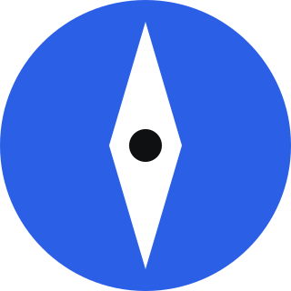
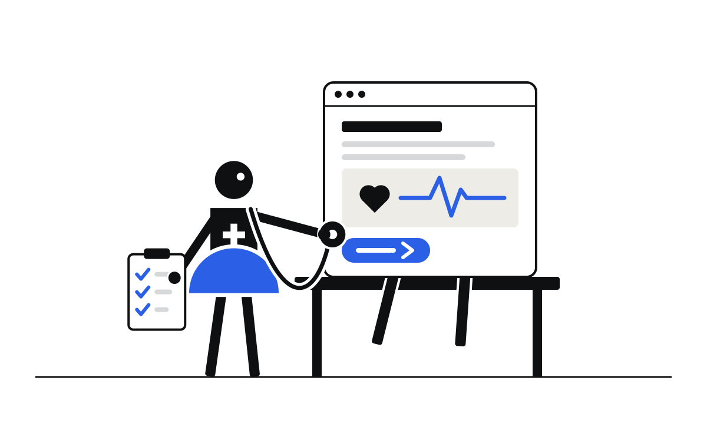

Website-Check
mit Designerblick
Tools messen die Technik und ich sehe mir jede Website selbst an.
Kostenlosen Prüfbericht anfordern
Acht Bereiche, 74 Kriterien
Erster Eindruck
Angebot in Sekunden verstanden
Weg zur Anfrage
Kontakt, Formular, Bewerbung
Handy und Tempo
Lesbar, bedienbar, schnell

Gefunden werden bei Google
Titel, Struktur, Inhalte

Gefunden werden in KI-Antworten
Übersicht mit KI bei Google und ChatGPT

Bedienbar für KI-Agenten
Buttons und Formulare für KI-Agenten
Barrierefreiheit (Accessibility)
Nutzbar mit Sehschwäche, nur mit Tastatur oder großer Schrift?
Technik und Sicherheit
Technisch aktuell? Von außen sichtbare Warnzeichen?
Was ein reiner Quelltext-Test nicht sieht:
- Erster Eindruck und Weg zur Anfrage
- Kontrast, Tastatur und Ansicht bei 320 px
- Bedienbarkeit für KI-Agenten
- Klick-Test im Cookie-Banner
50 Millisekunden
So schnell urteilen Menschen, wie ansprechend eine Website aussieht.
Ob sie danach auch am Handy, bei Google und in KI-Antworten überzeugt, zeigt der Website-Check.
Prüfbericht und Gespräch
- Prüfbericht als PDF in 48 Stunden
- Einstufung je Bereich mit Befunden und was sie für Sie bedeuten, in einfacher Sprache
- Die drei wichtigsten Maßnahmen für Ihre Website
- Klare Grenzen: was geprüft wurde und was nicht
- Auf Wunsch 45 Minuten Gespräch am Telefon

Wie würde Ihre Website abschneiden?
98 Firmen-Websites aus Leipzig und Umland:
- 85 %Zusätzliche Schutzschicht im Browser fehltContent-Security-Policy
- 53 %Keine strukturierten Daten im Format JSON‑LDJSON-LD; andere Formate nicht erfasst
- 31 %Kein Beschreibungstext für GoogleMeta-Description
- 9 %Handy-Ansicht nicht eingerichtetViewport-Angabe fehlt
Vier Schritte. Für Sie ist es einer.
- 01
Formular ausfüllen
- 02
Ich prüfe von außen
- 03
Prüfbericht per E-Mail
- 04
Gespräch

Ich sehe mir Ihre Website selbst an
Ich bin Anna Härtelt, UX/UI-Designerin in Leipzig, seit 2020 selbstständig mit STUDIO AAH! Ich lese jedes Ergebnis selbst gegen und schreibe den Bericht.
„Ich durfte mit Anna meine neue Website realisieren […]
absolute Herzensempfehlung!“
Einmal im Jahr zum Check-up
Auch wenn Sie nichts an Ihrer Website ändern, veraltet sie: Alles um sie herum entwickelt sich weiter.
- Kundschaft und Fachkräfte prüfen Ihre Website, bevor sie anrufen oder sich bewerben.
- KI liest mit: KI-Assistenten fassen Websites zusammen, KI-Agenten fragen im Auftrag an.
- Technik: Browser, Geräte und Google-Regeln ändern sich.
- Selbst gebaut, mit Baukasten oder KI? Der Check zeigt, was trägt und wo es hakt.

Häufige Fragen
Allgemein
Ist der Website-Check von STUDIO AAH! wirklich kostenlos?
Ja. Der Website-Check kostet nichts und verpflichtet zu nichts. Er ist ein Angebot in einer Testphase; ein Anspruch auf einen Check besteht nicht. Im Gegenzug wertet Anna Härtelt die Ergebnisse anonym aus, um ihren Service zu verbessern; Namen oder Website zeigt sie nur mit ausdrücklicher Erlaubnis.
Was brauche ich für den Website-Check?
Nur die Adresse Ihrer Website und Ihre E-Mail-Adresse, die Sie ins Formular eintragen. Wenn Sie den Bericht in einem Gespräch besprechen möchten, setzen Sie im Formular das Häkchen. Eine Vorbereitung ist nicht nötig.
Wie kann ich meine Website testen lassen?
Beim kostenlosen Website-Check von STUDIO AAH! tragen Sie die Adresse Ihrer Website und Ihre E-Mail-Adresse ins Formular ein. Anna Härtelt prüft die Website von außen in acht Bereichen mit 74 Einzelkriterien und schickt Ihnen innerhalb von 48 Stunden einen Prüfbericht als PDF. Auf Wunsch erklärt sie die Ergebnisse in einem 45-minütigen Telefongespräch.
Was prüft der Website-Check?
Der Website-Check von STUDIO AAH! prüft acht Bereiche mit 74 Einzelkriterien: ersten Eindruck, Weg zur Anfrage, Handy und Tempo, Auffindbarkeit bei Google, Auffindbarkeit in KI-Antworten, Bedienbarkeit für KI-Agenten, Barrierefreiheit sowie Technik und Sicherheit.
Was der Website-Check ist – und was nicht
Der Website-Check ist eine kostenlose Stichprobe: Ich prüfe die Startseite, bis zu vier weitere Seiten und – wenn vorhanden – die Wege in die Tiefe mit automatischen Prüfwerkzeugen und lese das Ergebnis selbst gegen. Der Bericht zeigt den Stand zum Zeitpunkt der Prüfung und ist nicht vollständig. Er ist keine Rechtsberatung, kein Sicherheits-Audit und kein vollständiger Test der Barrierefreiheit.
Ich hafte unbeschränkt bei Vorsatz und grober Fahrlässigkeit sowie bei Verletzung von Leben, Körper oder Gesundheit. Bei leichter Fahrlässigkeit hafte ich nur, wenn ich eine wesentliche Pflicht verletze, und nur für den typischerweise vorhersehbaren Schaden.
Für wen ist der Website-Check gedacht?
Für Unternehmen mit einer bestehenden Website, vor allem im Mittelstand, die wissen wollen, ob ihre Website noch zeitgemäß ist, Anfragen bringt und Bewerber:innen überzeugt.
Ich habe meine Website selbst gebaut, mit KI oder einem Baukasten. Lohnt sich der Check?
Ja. Der Website-Check prüft selbst gebaute Websites nach denselben acht Bereichen wie jede andere, darunter erster Eindruck, Handy und Tempo, Google, KI-Antworten und Barrierefreiheit. Sie sehen, was schon gut funktioniert und wo es noch hakt – als Stichprobe zum Zeitpunkt der Prüfung.
Wie oft sollte eine Website geprüft werden?
Anna Härtelt empfiehlt, eine Website einmal im Jahr prüfen zu lassen. Wurde eine Website in den letzten zwei Jahren nicht geprüft, rät sie, das jetzt nachzuholen: Seit Ende März 2025 fasst Google Suchergebnisse in Deutschland mit KI zusammen („Übersicht mit KI“), und im Juli 2025 hat OpenAI einen ChatGPT-Agenten vorgestellt, der Websites im Auftrag von Menschen bedient. Ältere Websites wurden für beides noch nicht gebaut.
Braucht ein Unternehmen im KI-Zeitalter noch eine Website?
Ja. Die Website ist die Quelle, aus der Suchmaschinen und KI-Assistenten ihre Antworten zusammenstellen, und der Ort, an dem KI-Agenten im Auftrag von Menschen anfragen oder Termine vereinbaren. Google zeigt in der „Übersicht mit KI“ laut eigenen Angaben Links zu den Websites, auf denen die Antwort beruht. Damit eine Website dort vorkommt, muss sie für Menschen und Maschinen gut lesbar sein – das prüft der Website-Check.
Was passiert nach dem Website-Check?
Sie entscheiden. Die Maßnahmen aus dem Prüfbericht können Sie selbst umsetzen oder umsetzen lassen; auf Wunsch schickt Anna Härtelt Ihnen ein unverbindliches Angebot mit festem Preis. Ein Redesign bei STUDIO AAH! beginnt bei 2.850 € netto.
Die acht Prüfpunkte
Was wird beim ersten Eindruck geprüft?
Beim ersten Eindruck prüft Anna Härtelt, ob man auf der Startseite in wenigen Sekunden versteht, was Sie anbieten, für wen und warum bei Ihnen. Dazu schaut sie auf den Auftritt Ihrer Marke (Branding), Überschriften und Texte, Bilder und die Ordnung der Seite.
Was bedeutet „Weg zur Anfrage“?
Der Weg zur Anfrage ist der Pfad von der ersten Seite bis zur Anfrage oder Bewerbung – im Marketing heißt er Funnel. Anna Härtelt prüft, ob jede wichtige Seite eine klare Handlungsaufforderung (Call to Action) hat, wie viele Klicks und Formularfelder bis zur Anfrage nötig sind und ob eine Bewerbung auch am Handy klappt. Dahinter steht die Frage nach dem Konzept: Wen soll die Website wozu bewegen?
Warum werden Handy und Tempo geprüft?
Eine Website muss auf jedem Gerät funktionieren, mit dem Kundinnen, Kunden und Bewerber sie aufrufen. Geprüft werden Lesbarkeit und Bedienung am Smartphone sowie die Ladezeit; dafür nutzt Anna Härtelt PageSpeed Insights von Google, das die Core Web Vitals auswertet – die Kennzahlen, mit denen Google die Nutzererfahrung einer Seite misst.
Was wird für Google geprüft?
Geprüft werden die Grundlagen der Suchmaschinenoptimierung (SEO): Seitentitel und Beschreibungen, die Struktur der Überschriften und ob Google alle wichtigen Seiten finden und anzeigen darf.
Wie kommt meine Website in KI-Antworten?
Laut Google gibt es für die „Übersicht mit KI“ keine zusätzlichen Anforderungen; es zählen die bekannten Grundlagen: Google darf die Seite durchsuchen, wichtige Inhalte stehen als Text auf der Seite, und strukturierte Daten (Structured Data) passen zum sichtbaren Text. Im Website-Check prüft Anna Härtelt diese Grundlagen – das hilft auch KI-Assistenten wie ChatGPT, Ihr Angebot richtig wiederzugeben.
Was sind KI-Agenten, und warum sollte meine Website für sie bedienbar sein?
KI-Agenten sind Programme, die im Auftrag von Menschen Websites aufrufen, klicken, filtern und zum Beispiel Termine vereinbaren; OpenAI hat einen solchen Agenten für ChatGPT im Juli 2025 vorgestellt. Damit ein Agent eine Anfrage stellen kann, müssen Buttons, Links und Formularfelder eindeutig beschriftet sein – genau das prüft Anna Härtelt im Website-Check.
Ist Barrierefreiheit für meine Website Pflicht?
Für viele Websites ja: Seit dem 28. Juni 2025 gilt das Barrierefreiheitsstärkungsgesetz (BFSG) für bestimmte Dienstleistungen für Verbraucherinnen und Verbraucher, darunter Dienstleistungen im elektronischen Geschäftsverkehr, etwa Onlineshops. Kleinstunternehmen, die Dienstleistungen erbringen – weniger als zehn Beschäftigte und höchstens 2 Millionen Euro Jahresumsatz –, sind laut Bundesfachstelle Barrierefreiheit ausgenommen. Ob das BFSG für Ihre Website gilt, hängt von Ihrem Angebot ab; der Website-Check ersetzt keine Rechtsberatung.
Was wird bei der Barrierefreiheit geprüft?
Anna Härtelt prüft Kontraste, Schriftgrößen und Zoom, die Bedienung nur mit Tastatur, Alternativtexte für Bilder und beschriftete Formularfelder. Ein vollständiger Barrierefreiheitstest nach Norm ist der Website-Check nicht.
Was wird bei Technik und Sicherheit geprüft?
Geprüft wird, was von außen sichtbar ist: eine verschlüsselte Verbindung (HTTPS), erkennbar veraltete Software wie alte WordPress- oder Plugin-Versionen, Spuren eines Angriffs wie versteckte fremde Links und grundlegende Sicherheitseinstellungen. Ein Sicherheits-Audit von Server und Zugängen ersetzt der Website-Check nicht.
Fit für 2027?
Finden wir es heraus.
Passende Artikel
-
-

Webdesign
Was sollte eine Website 2027 können?
-